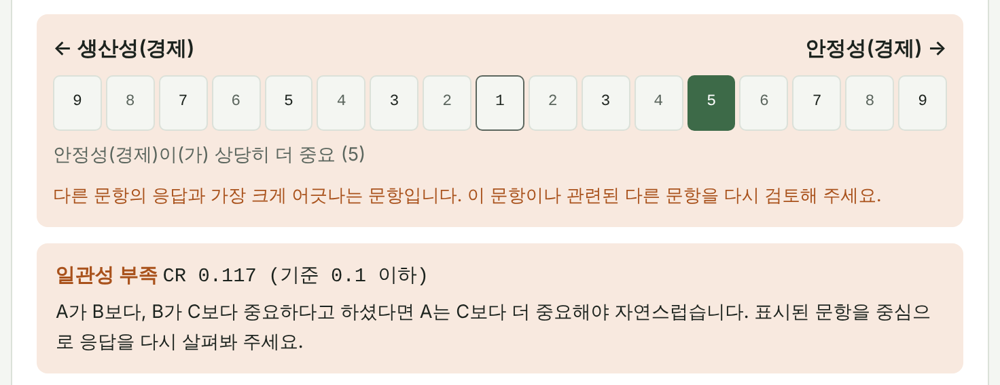
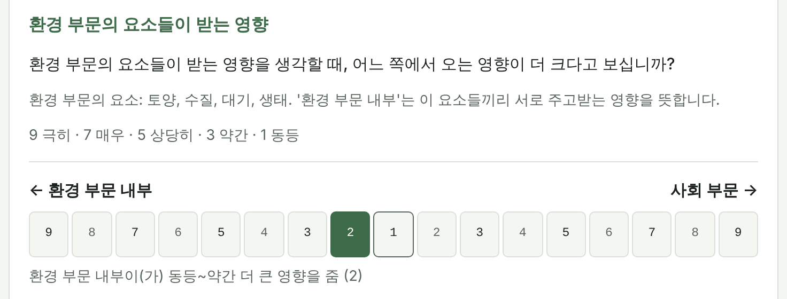

농업 빅데이터 및 기술경제 연구실
설문 응답 방법 안내
두 요소를 짝지어 비교하는 설문입니다. 1부는 중요도(AHP), 2부는 영향의 크기(ANP)를 묻습니다. 성함을 입력하고 1부 15문항과 2부 28문항에 답한 뒤 확인 화면에서 제출하시면 됩니다. 약 15분 걸립니다.
1부 · AHP
중요도 비교
같은 상위 항목에 속한 두 요소 중 농가를 평가할 때 어느 쪽이 더 중요한지, 그리고 얼마나 더 중요한지 고릅니다. 요소 이름 옆 괄호는 그 요소가 속한 부문입니다.
척도
| 1 | 3 | 5 | 7 | 9 |
| 동등 | 약간 더 | 상당히 더 | 매우 더 | 극히 더 |
가운데 1에서 더 중요한 요소 쪽으로 갈수록 숫자가 커집니다. 2·4·6·8은 그 사이 값입니다.

일관성 안내가 나오면
숫자는 '몇 배'로 이어집니다. A가 B보다, B가 C보다 중요하다고 답하셨다면 A는 C보다 더 중요해야 자연스럽습니다. 응답이 크게 어긋나면 가장 어긋난 문항이 표시됩니다.

2부 · ANP
영향 비교
여기서는 중요도가 아니라 영향의 크기를 묻습니다. 사전 조사(DEMATEL)에서 서로 영향이 있다고 나타난 관계만 나오며, 척도는 1부와 같습니다.
요소 간 영향
영향을 받는 요소를 기준으로, 같은 부문에 속한 두 요소 중 어느 쪽이 그 요소를 더 크게 좌우하는지 고릅니다.

부문 간 영향 (마지막 화면)
한 부문의 요소들이 받는 영향이 어느 부문에서 더 많이 오는지 비교합니다. '○○ 부문 내부'는 그 부문 요소들끼리 서로 주고받는 영향입니다.

마지막 확인 화면에서 일관성을 확인하고 [제출하기]를 누르시면 끝납니다. 같은 성함으로 다시 제출하시면 이전 응답이 새 응답으로 바뀝니다.